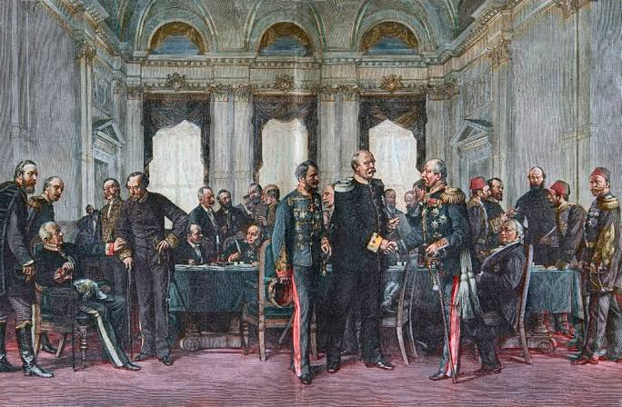
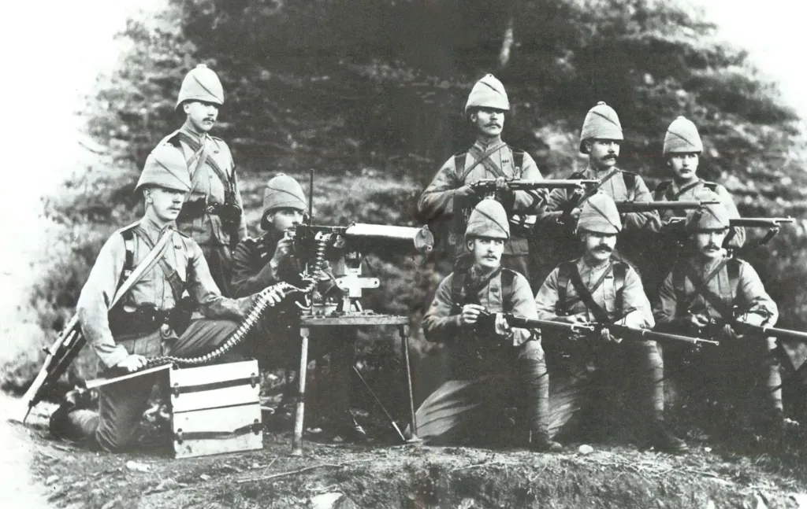
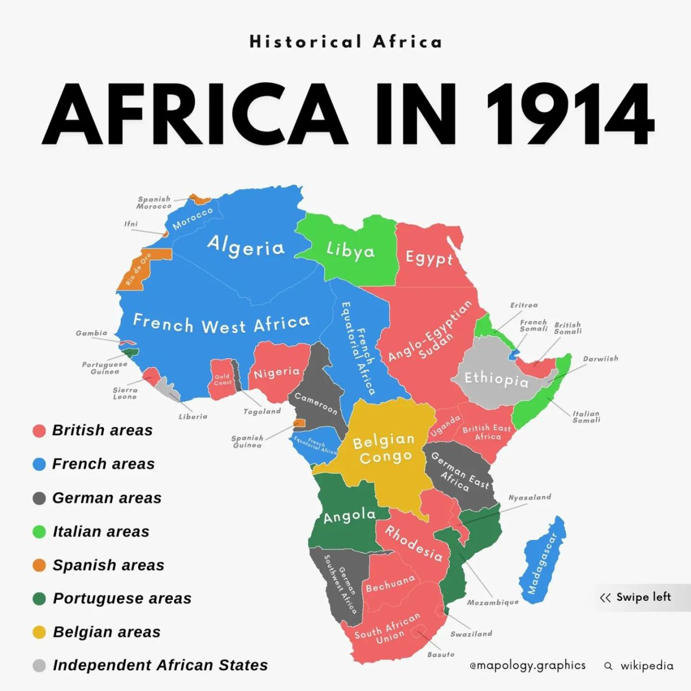
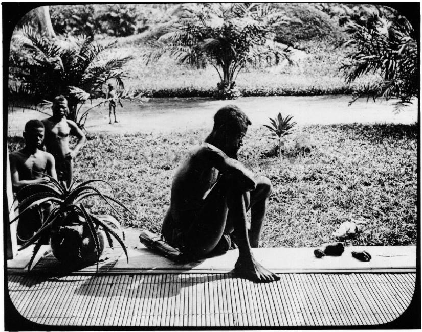
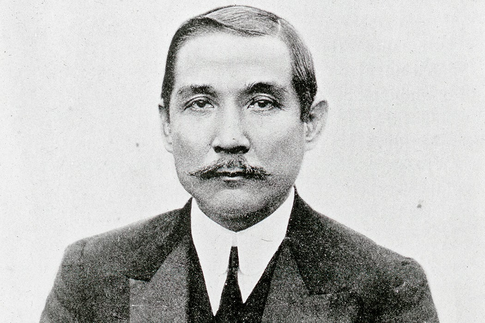
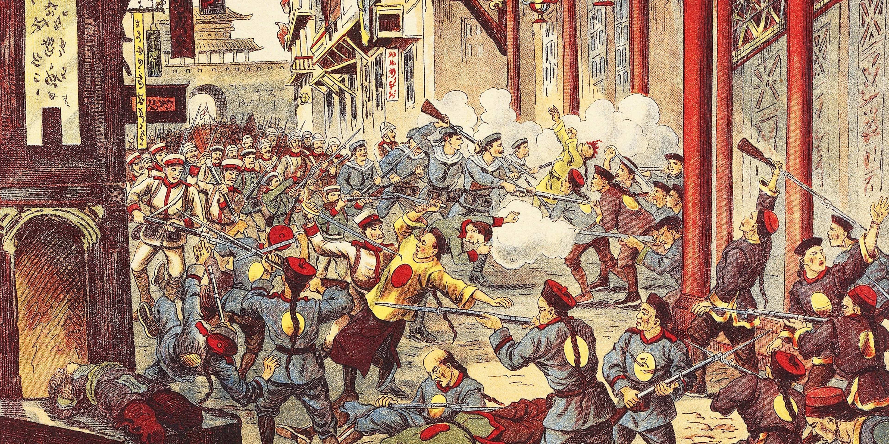
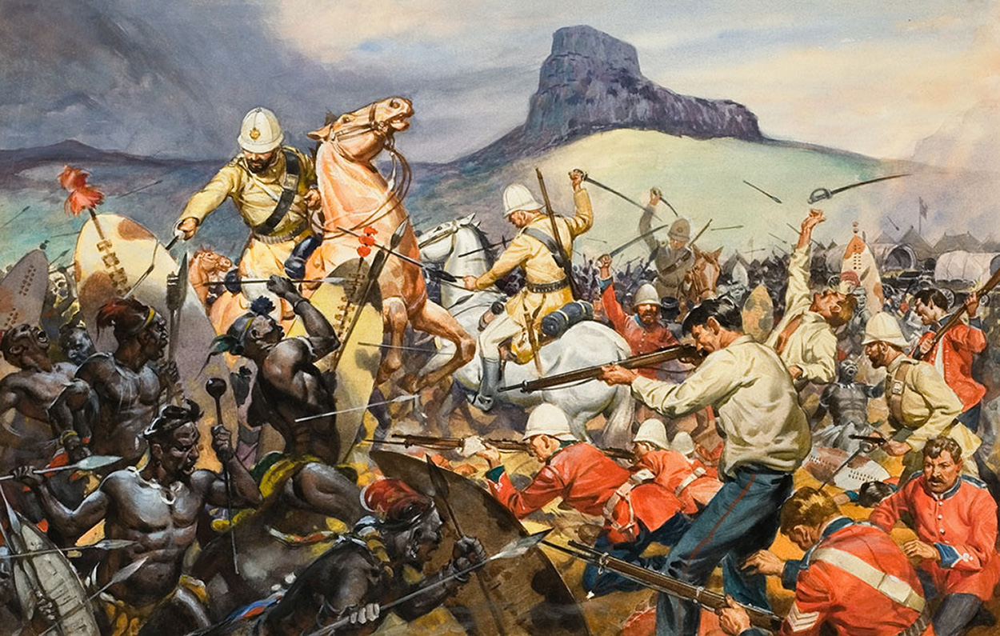
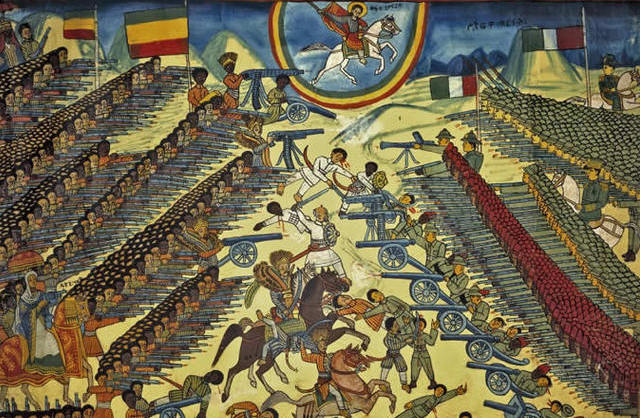
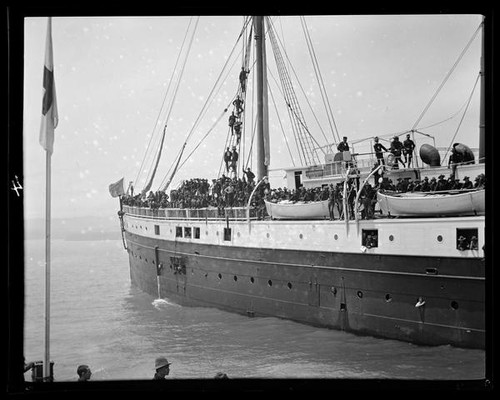
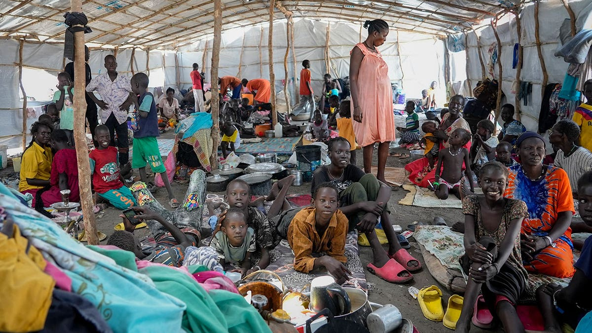

In 1884, fourteen men sat down around a conference table in Berlin, Germany, and divided an entire continent between them. They had maps, rulers, and red wine. What they did not have was a single African person in the room. By the time they finished, they had drawn borders across the land, rivers, and villages of Africa as if the continent were a blank piece of paper. The people who lived there were not consulted. They were not informed. They were simply assigned.
This meeting, called the Berlin Conference, was not unusual for its time. Between 1880 and 1914, the major European powers seized control of roughly 85 percent of the earth's land surface. They called it civilization. The people they conquered called it something else. This lesson tells both stories.
Why They Came: The Logic of Empire

The Berlin Conference, 1884-1885. Fourteen European nations divided Africa into colonial territories without consulting a single African leader. Wikimedia Commons.
ImperialismWhen a powerful country takes political and economic control over a weaker country or territory, often by force, and runs it for the benefit of the more powerful nation. is not a new idea. Empires have existed since ancient times. But the wave of empire-building that swept the globe between roughly 1870 and 1914 was different in scale and speed from anything that had come before. Historians call it the New Imperialism to distinguish it from older colonial patterns. In less than four decades, a handful of European nations and the United States carved up Africa, Asia, and the Pacific between them.
Several forces drove it. The Industrial Revolution had made European nations enormously powerful: they had steamships to reach distant places, railroads to move armies inland, machine guns to defeat traditional armies, and telegraphs to coordinate their forces. They also had a hunger for raw materials: rubber from the Congo, cotton from Egypt, tin from Malaya, oil from Persia, diamonds and gold from South Africa. Industrial factories needed those materials to keep running; industrial consumers wanted the cheap manufactured goods those materials produced.

British soldiers with a Maxim machine gun, circa 1895. The Maxim could fire 600 rounds per minute; traditional spears and muskets had no answer for it. Wikimedia Commons.
European nations also competed fiercely with each other. If Britain seized a territory, France feared being left behind. If France moved into West Africa, Germany rushed to claim a neighboring region. This competition among European powers was not just about economics; it was about national pride and hegemonyDominance or leadership over others; when one country or group has so much power that it controls the direction of politics, economics, or culture for an entire region or era.: the drive to be the dominant power in the world.
Two ideologies gave empire-building a moral justification. The first was Social DarwinismThe misapplication of Darwin's theory of evolution to human societies; the argument that some races or nations are naturally superior and therefore have the right to dominate weaker ones., which we encountered in the last lesson. Applied to imperialism, it argued that European conquest was simply the natural result of European racial and cultural superiority: a scientific fact, not a moral choice. The second was the missionary impulse: the belief that Christianity obligated Europeans to bring their religion and civilization to non-Christian peoples around the world. The British poet Rudyard Kipling called this "the White Man's Burden." He meant it as praise; colonized people heard it as an insult.
Together, these forces created a system of colonialismWhen one country settles, governs, and economically exploits another territory, treating its people and resources as property of the colonial power. that reshaped the entire globe. The borders drawn at the Berlin Conference in 1884 are still largely the borders of African nations today; the conflicts those arbitrary lines created are still playing out in wars, famines, and refugee crises across the continent.
"Take up the White Man's burden / Send forth the best ye breed / Go bind your sons to exile / To serve your captives' need."
Rudyard Kipling, The White Man's Burden, 1899 — written to encourage the United States to colonize the Philippines
Kipling framed colonialism as a noble sacrifice by Europeans for the benefit of colonized peoples — but the people being colonized overwhelmingly rejected this framing and fought back against it at great personal cost.
1. What is Kipling arguing in this poem? What words does he use that reveal how he sees colonized people?
2. How does this connect to our Essential Question? What does Kipling's logic tell us about why powerful nations justified taking over weaker ones?
Africa and India: Two Faces of Colonial Rule

Colonial Africa, 1914. Nearly the entire continent was under European control. Only Ethiopia and Liberia remained independent. Wikimedia Commons.
In 1880, Europeans controlled about 10 percent of Africa. By 1914, they controlled more than 90 percent. The speed of this conquest is staggering. African kingdoms that had governed themselves for centuries: the Zulu Empire, the Ashanti Confederation, the Sokoto Caliphate, the Kingdom of Benin: were defeated and absorbed within a generation. The primary reason was technology. The Maxim machine gun, the rifle, and the steamboat gave European armies an overwhelming military advantage over forces armed with older weapons. The Ndebele warrior Lobengula described it simply: "Did you ever see a chameleon catch a fly? The chameleon gets behind the fly and remains motionless for some time, then he advances very slowly and gently... that is how the white man gets things."
The human cost was catastrophic. In the Belgian Congo, King Leopold II of Belgium ran the territory as a personal profit machine. His agents forced Congolese people to collect rubber quotas. Those who failed had their hands cut off. Historians estimate that the Congo's population fell by ten million people between 1880 and 1920: through murder, starvation, disease, and forced labor. This was not an accident; it was policy.

Congo Free State, 1904. Photographs documenting King Leopold's rubber quota atrocities were published worldwide and shocked international opinion into demanding reform. Wikimedia Commons.
India experienced a different but equally transformative form of colonial rule. Britain had been trading in India since the 1600s through the British East India Company. By 1858, after a massive Indian uprising called the Sepoy Mutiny, the British government took direct control of India. India became the jewel of the British Empire: a territory of 300 million people that provided cotton, tea, spices, indigo, and millions of soldiers for British wars around the world.
British rule brought railways, telegraph lines, and Western-style schools to India. British officials pointed to these as evidence of their civilizing mission. But Indian critics pointed out that the railways were built to move British goods and troops, not to benefit Indians; that the schools taught Indians to administer the colonial system; and that British trade policies had deliberately destroyed India's textile industry to benefit British manufacturers. India, once the world's largest producer of cotton cloth, was now forced to buy British-made cloth from mills that used Indian cotton. The colonialism was economic as much as political.
"We have brought order, law, modern medicine, and railways to a land torn by centuries of internal warfare. We are lifting India toward civilization. Without British guidance, these people would return to chaos. Our presence here is a gift, not a conquest."
"They take our cotton, weave it in their mills, and sell it back to us at prices that destroy our weavers. They call it trade. Every railway they build carries our wealth to their ships. They say they are lifting us; they are standing on us. India was not chaos before they came. It is being drained."
The railway network that British colonialism built in India is still the backbone of the country's transportation system today. The borders that Britain drew across South Asia in 1947 when it finally left: separating India from Pakistan: set off one of history's deadliest religious conflicts and created a rivalry that still drives nuclear weapons policy on both sides.
China and the Philippines: Resistance from the Start


Left: Sun Yat-sen, leader of the Chinese revolution that overthrew the Qing dynasty, circa 1912. Right: Emilio Aguinaldo, leader of the Filipino independence movement against both Spain and the United States, circa 1898. Wikimedia Commons.
China was never fully colonized, but it came close. By the 1840s, Britain had forced China to accept imports of opium: a highly addictive drug: through a series of wars called the Opium Wars. When Chinese officials tried to stop British merchants from flooding the country with opium, the British navy bombarded Chinese ports. China was forced to sign humiliating "unequal treaties" that gave European powers control over key Chinese ports and exempted foreign citizens from Chinese law. This system of foreign dominance without full colonialism is a form of hegemony that historians call "informal empire."

Boxer Rebellion, China, 1900. Chinese fighters rose up against foreign control and Christian missionary influence; an eight-nation military alliance crushed the uprising and imposed further humiliations on China. Wikimedia Commons.
Chinese resistanceThe act of fighting back against a force that has power over you; in the context of imperialism, organized efforts by colonized people to push back against foreign control through protest, rebellion, or political organizing. took many forms. In 1900, a movement called the Boxers rose up against foreign influence and Christian missionaries. Eight foreign nations sent troops to crush the uprising. In 1911, Sun Yat-sen led a revolution that overthrew the Qing dynasty and established a Chinese republic. Sun had been educated in Hawaii and Hong Kong; he blended Western democratic ideas with Chinese nationalism to create a movement that declared China's sovereignty over its own destiny. He is still honored today in both mainland China and Taiwan as the father of the nation.
The Philippines experienced American imperialismWhen a powerful country takes political and economic control over a weaker country or territory, often by force, and runs it for the benefit of the more powerful nation. directly. In 1898, the United States defeated Spain in the Spanish-American War and took control of the Philippines, Puerto Rico, and Guam. Filipino leader Emilio Aguinaldo had fought alongside the Americans against Spain, believing the United States would grant the Philippines independence. Instead, the U.S. paid Spain $20 million for the islands and declared them an American territory. Aguinaldo launched a guerrilla war against his former allies. The Philippine-American War killed over 200,000 Filipino civilians through combat, disease, and famine. The United States did not grant the Philippines independence until 1946.
Today, the Philippines is one of the largest sources of immigration to the United States. Many Filipino Americans trace their families' connection to America directly to the colonial relationship that began in 1898. That history is not ancient; it is one generation removed from living memory.
"I have seen that we do not intend to free, but to subjugate the people of the Philippines. We have gone there to conquer, not to redeem... And so I am an anti-imperialist. I am opposed to the eagle putting its talons on any other land."
Mark Twain, New York Herald interview, October 15, 1900
Twain was one of the most famous voices in the American Anti-Imperialist League; his words were controversial precisely because they came from inside the empire, an American criticizing American conquest at the height of its popularity.
1. What does Twain say the United States is actually doing in the Philippines? How does he distinguish between "freeing" and "subjugating"?
2. How does this connect to our Essential Question? What does Twain's argument tell us about how people inside powerful nations responded to imperialism?
Fighting Back: How Colonized People Resisted

Battle of Isandlwana, January 22, 1879. Zulu forces annihilated a British army column of 1,300 soldiers — the worst British military defeat of the colonial era. The victory was temporary; Britain returned with overwhelming force. Wikimedia Commons.
Colonized people did not accept conquest passively. Across Africa, Asia, and the Pacific, people fought back in every way available to them: armed rebellion, political organizing, legal challenges, cultural preservation, and journalism. The forms of resistance varied by place and circumstance, but the refusal to accept conquest as permanent was nearly universal.
In southern Africa, the Zulu nation under King Cetshwayo defeated a British army at the Battle of Isandlwana in 1879: one of the most significant African military victories over European forces in the entire colonial era. It shocked Britain. The government sent reinforcements, and the Zulus were eventually defeated. But the battle proved that European armies were not invincible. In Ethiopia, Emperor Menelik II modernized his army with European weapons purchased from France and Italy, then crushed an invading Italian army at the Battle of Adwa in 1896. Ethiopia remained independent: the only African nation to successfully resist full colonization during the Scramble for Africa.

Battle of Adwa, March 1, 1896. Ethiopian forces under Emperor Menelik II defeated the Italian army, preserving Ethiopia's independence and inspiring anti-colonial movements worldwide. Wikimedia Commons.
In India, resistance took a political form. The Indian National Congress, founded in 1885, began as a moderate organization asking for more Indian representation in colonial government. By the early 1900s, it had become the seed of a mass independence movement. A young London-trained lawyer named Mohandas Gandhi was developing his philosophy of nonviolent resistance: the idea that colonized people could defeat empire not by matching its violence but by refusing to cooperate with it. His methods would eventually force Britain out of India in 1947 and inspire civil rights movements across the world.
The independence movements that colonized peoples built between 1880 and 1914 were the seeds of the decolonization wave that swept the globe between 1945 and 1975. Nearly every nation in Africa, Asia, and the Caribbean that is independent today won that independence within living memory. The world map as it exists right now is largely a product of colonial conquest and anti-colonial resistance; neither process is finished.

U.S. troops departing from San Diego for the Philippines, circa 1898-1902. San Diego's naval base served as a major staging point for the Philippine-American War. Library of Congress / Wikimedia Commons.
When the United States seized the Philippines from Spain in 1898, San Diego's military installations became a key staging and supply point for the Pacific war that followed. Thousands of American soldiers passed through San Diego on their way to fight Emilio Aguinaldo's independence forces in the Philippine-American War. The war that Kipling's poem had celebrated as a civilizing mission became, in practice, a brutal counterinsurgency that killed over 200,000 Filipino civilians.
The legacy of that colonial relationship flows directly into San Diego's present. The Philippines became the second-largest source of immigrants to San Diego County, a connection that traces back to the 1898 colonial moment. San Diego's Mira Mesa neighborhood became one of the largest Filipino-American communities in the United States: built by nurses, Navy personnel, and their families who came to San Diego precisely because of the military and colonial ties between the two countries that were forged in 1898.
When you see news coverage of conflicts in Sudan, the Democratic Republic of Congo, Kashmir, or Palestine, you are watching the consequences of decisions made at tables in Berlin, London, and Paris more than a century ago. Colonial powers drew borders that split ethnic and religious communities, or crammed historic enemies together inside the same lines. They extracted wealth and left behind systems designed for extraction, not development. The arguments about reparations, about global economic inequality, about who owns what: all of these trace directly back to the era in this lesson.
- Colonial Borders and Modern Conflict: How 1884 Still Shapes African Wars — BBC Africa
- The Reparations Debate: Who Owes What for the History of Colonialism — New York Times
- The Unfinished Business of Decolonization: Nations Still Fighting for What Was Taken — PBS NewsHour

Refugees in a modern African conflict zone. Many of the borders that colonial powers drew in 1884 split communities and created the conditions for the conflicts still displacing millions of people today. Wikimedia Commons.
If you were at the Berlin Conference in 1884, would you have signed the agreement that divided Africa; and if not, what would you have done instead?